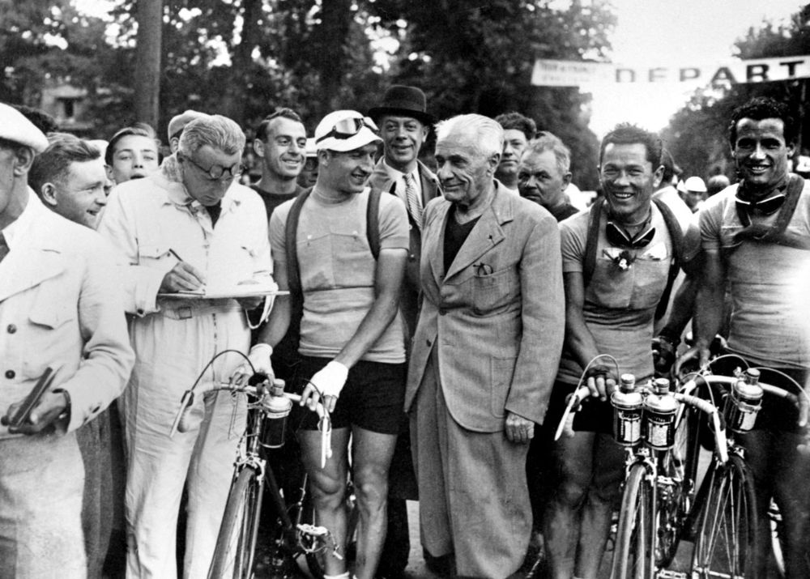
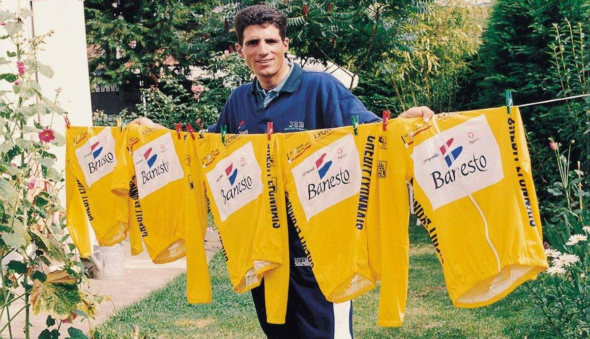
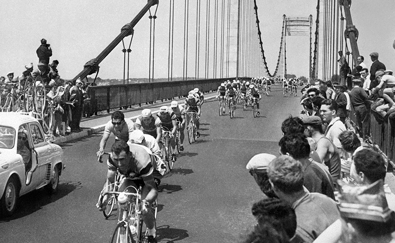
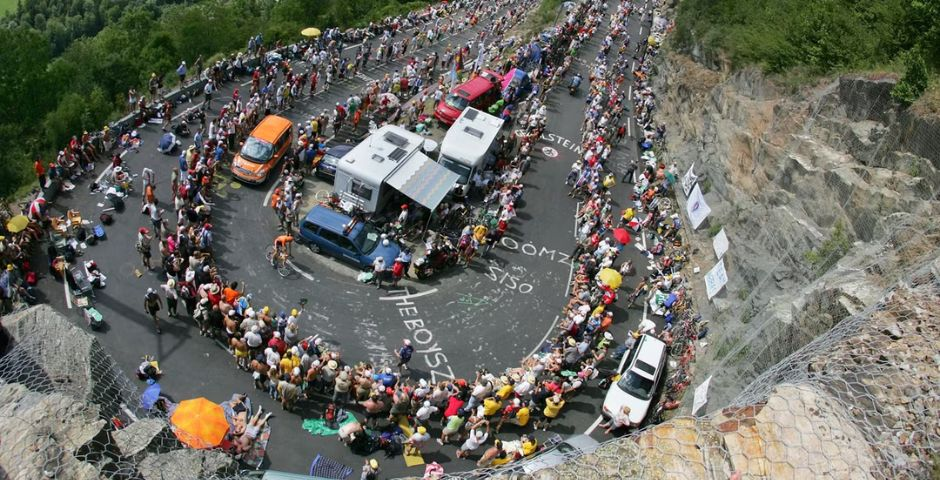
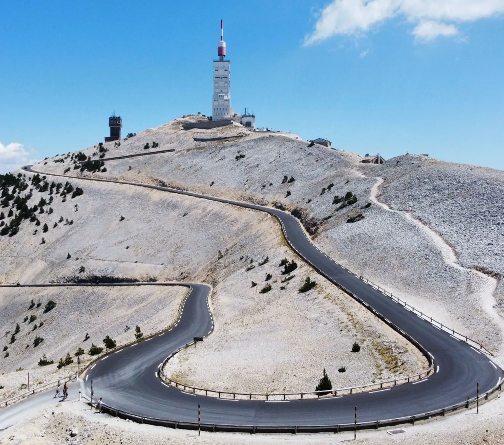
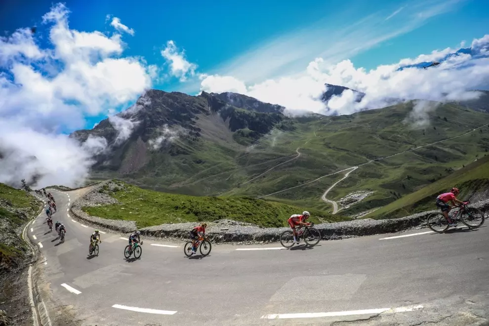

El Tour de Francia no es simplemente una carrera de bicicletas; es un monumento vivo a la resistencia humana. Lo que comenzó en 1903 como una estrategia desesperada de marketing para salvar un periódico deportivo, terminó convirtiéndose en el escenario de las mayores gestas y tragedias del deporte moderno.
Los Orígenes
La génesis del Tour tiene poco de romántica y mucho de audacia empresarial. Henri Desgrange, editor del diario L'Auto, necesitaba un golpe de efecto para hundir a su competencia. Su idea fue tan simple como brutal: una carrera que recorriera Francia entera, dividida en etapas, con premios suficientes para atraer a los hombres más duros del país.
Aquellos pioneros de 1903 no eran atletas de élite en el sentido moderno, sino aventureros que pedaleaban sobre máquinas de hierro de 15 kilos por caminos sin asfaltar, a menudo durante toda la noche. De los 60 participantes iniciales, solo 21 lograron completar las 2.428 kilómetros de la primera edición. El ganador, Maurice Garin, empleó más de 94 horas sobre la bicicleta a una media de apenas 25 km/h.
Lo que nació como una estrategia para vender periódicos se convirtió en el fenómeno deportivo más longevo del planeta. Correr el Tour se transformó en la prueba de fuego del ciclismo mundial, una gesta que cada año desafía los límites del cuerpo humano.

Henri Desgrange, padre del Tour de Francia
Miguel Induráin, pentacampeón del TourEl Color de la Victoria
Si hay un símbolo que define al Tour es el Maillot Jaune. Introducido en 1919 para que el público pudiera identificar al líder entre el polvo y el cansancio de la ruta, su color amarillo se convirtió en el objeto de deseo más preciado del deporte.
Con el paso de las décadas nacieron el maillot verde para premiar la regularidad y los icónicos puntos rojos para el mejor escalador.
"El Tour de Francia es el escenario donde se escribe la historia a base de sudor, épica y una voluntad inquebrantable."
Dinastías y Duelos al Sol
La historia del Tour se cuenta a través de sus grandes dominadores y de los duelos que paralizaron naciones enteras. Cada década ha tenido sus héroes, sus rivalidades y sus momentos de gloria. Hemos sido testigos de eras que definieron generaciones enteras de aficionados al ciclismo:
Jacques Anquetil
Elegancia técnica. El primer hombre en sumar cinco coronas, dominando tanto la contrarreloj como la montaña con una sobriedad que escondía un corazón de campeón.
Eddy Merckx
Apodado "El Caníbal". No dejaba ni las migajas a sus rivales. Once Grandes Vueltas, tres Mundiales y todas las clásicas del calendario. El más grande.
Bernard Hinault
El último gran patrón francés. Carisma, fuerza y una determinación de hierro. Cinco Tours, tres Giros y dos Vueltas. Un palmarés sin parangón.
Miguel Induráin
Sangre fría y precisión. Convirtió la contrarreloj en un arte científico durante los años 90. Cinco Tours consecutivos entre 1991 y 1995.
Pero el Tour también son las rivalidades que trascienden generaciones: Coppi contra Bartali dividió Italia en los años 40; Fignon contra Lemond nos regaló el duelo más ajustado de la historia por apenas 8 segundos en 1989; y la era moderna nos trajo a Lance Armstrong, cuyo legado quedó marcado por la controversia del dopaje que sacudió los cimientos del deporte.
Hoy, nombres como Tadej Pogačar, Jonas Vingegaard y Primož Roglič escriben un nuevo capítulo, con ataques desde lejos, potencias estratosféricas y un nivel que no deja de sorprender al mundo.
Sabías que... En 1919, Eugène Christophe reparó su horquilla rota en una fragua y perdió 4 horas, pero la gesta lo convirtió en leyenda. Es el origen del maillot de mejor luchador.
Curiosidades del Tour
Más de un siglo de competición ha dejado historias fascinantes que pocos conocen. Datos, anécdotas y récords que demuestran que el Tour es mucho más que una carrera.
El Amarillo no era amarillo
El maillot amarillo se introdujo en 1919, pero no porque el amarillo fuera el color del liderato, sino porque el periódico L'Auto se imprimía en papel amarillo.
Sudor y Litros
Un corredor del Tour puede perder entre 6 y 10 litros de agua al día en etapas de calor extremo. Beber y beber es la regla de supervivencia.
Bicicletas de 15.000 €
Las bicicletas de los equipos profesionales cuestan entre 10.000 y 15.000 euros. Con cambios electrónicos, ruedas de carbono y potenciómetros integrados.
El Corazón del Campeón
La frecuencia cardíaca de un ciclista del Tour puede permanecer por encima de 160 pulsaciones durante más de 5 horas seguidas en las etapas de alta montaña.
El Tour en el Siglo XXI
Hoy, el Tour de Francia es un espectáculo global que llega a 190 países con una audiencia acumulada de más de 3.500 millones de espectadores. Las bicicletas de acero han dado paso a naves espaciales de carbono de alto módulo, y los ciclistas son monitorizados al milímetro por equipos científicos con nutricionistas, psicólogos y entrenadores que analizan cada vatio.
Sin embargo, cuando el asfalto se empina en el Mont Ventoux o el Alpe d'Huez, la tecnología pasa a un segundo plano. Sigue siendo el mismo desafío de hace un siglo: un hombre, una máquina y el deseo infinito de llegar primero a los Campos Elíseos de París. La esencia del Tour, esa mezcla de sufrimiento y gloria, permanece intacta.
Las nuevas generaciones han traído un estilo de carrera más explosivo y agresivo. Los ataques desde lejos, las dobles ascensiones a puertos icónicos y la irrupción de corredores cada vez más jóvenes están redefiniendo lo que creíamos posible sobre dos ruedas. El Tour del siglo XXI es más rápido, más táctico y más global que nunca.

El pelotón moderno en acciónLas Etapas que Definen al Tour
Cada año, el recorrido del Tour selecciona los puertos y terrenos que pondrán a prueba a los mejores. Algunas cimas se han convertido en símbolos, y cada vez que el pelotón las afronta, la historia se escribe de nuevo.

Alpe d'Huez
21 curvas de leyenda. Subida de 13,8 km al 8,1%. Desde 1952, es el juez definitivo de las ambiciones amarillas. Sus curvas llevan nombres de campeones.

Mont Ventoux
El Gigante de Provenza. 1.909 metros de piedra caliza, viento y resistencia. Una de las ascensiones más duras del ciclismo mundial.

Col du Tourmalet
El puerto más emblemático de los Pirineos. 2.115 metros de altitud con rampas del 10% que han partido el pelotón en mil pedazos.